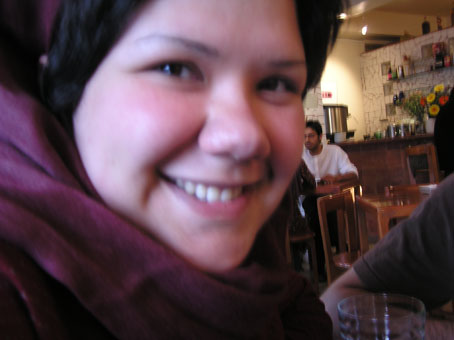

این را سرنوشت می نامند:
رو در رو بودن
ونه چیزی جز آن
و همواره رو در روی
"ریلکه "
نوشتن از دلارام ، ننوشتن از او ، هر دو چه سخت است.
نوشتن بر علیه زندان ، قدرت کور، حماقت وکم خردی چقدر سخت است. نوشتن بر علیه منطق و دورانی که شجاع ترین و بهترین جوانانش در زندان اند ، نوشتن از حقیقتی که همه می بینیمش و می دانیمش و از چرایی آن اگاهیم و به آن معترضیم ...
صبح ، جلوی پله های دادگاه انقلاب خبر حکم دلارام را شنیدم. زود تر از خودش ... زهره می رود خبر را بگوید . من جلو نمی روم ... خجالت می کشیم به چشم های دلارام و پیام نگاه کنم...
عقب تر ایستاده ام ، به ساختمان بزرگ و دود گرفته دادگاه نگاه می کنم ، سرتاپا حیرت و ناباوری و خشم هستم
دلارام به آرامی مقنعه سیاهش را با روسری سبز و خاطره بر انگیزی عوض می کند.رنگ های شاد هیچ وقت ترکش نمی کنند.
در سکوت و تعلیق به کنفرانس مطبوعاتی می رویم . کنار در،هر کدام یک گوشه راهروی خالی نشسته ایم . دلارام به قیافه های بهت زده مان می خندد و مسخره مان می کند. کم کم بچه ها از راه می رسند. گریه می کنند ، دلداری می دهند ، چهره هاشان سراسر فریاد است. دلارام از همه محکم تر ایستاده و با وکلایش صحبت می کند.
چند ساعت بعد در باره کتاب هایی که می تواند در زندان بخواند ، پروژه های تحقیقاتی که آنجا می تواند انجام دهد و بهترین استفاده ای که می تواند از وقتش ببرد صحبت می کند. تصمیم گرفته به زودی خودش را معرفی کند...
تصمیم گرفته خودش را به دستگاه قضایی معرفی کند همان طور که در این یک سال که پرونده اش تحت بررسی بود تنها با قرار التزام " به قول شرف" آزاد بود بدون کفیل و وثیقه.
پارسال در چنین روزهایی ایران را به قصد تحصیل در کشوری دیگر ترک کرده بود ، اما اندکی بعد بی قرار به کشورش بازگشت ، در حالی که سایه حکم 22 خرداد ماه در میدان 7 تیر هنوز بالای سرش بود و می دانست با توجه به عدالت همیشه جاری در احکام قضایی کشورش ممکن است بدون هیچ دلیل واقعی با حکم سنگینی مواجه شود.
22 خردادی که در گوشه ای از پارک در کنارما ایستاده بود و سرود می خواند و کتک می خورد.
22 خردادی که دستش را شکستند و روی زمین کشیدند و بردندش .
22 خردادی که امروز به خاطر دهن کجی به آن همه عکس و خبر انکار نا شدنی اش دلارام چنین حکمی میگیرد و مامورانی که کتکش زدند تبرئه می شوند.ننگی که با هیچ رنگی پاک نمی شود...
دلارام مددکاری با هوش و تواناست که برای احقاق حقوق کودکان می کوشد. او در شرایط سخت و بحرانی زلزله بم ماه ها در بین چادرها و خرابه ها ، در نا امن ترین محله ها کودکان بم را تنها نگذاشت . با آن ها بازی می کرد و خنده بر لبان مصیبت دیده شان می نشاند ،در نبود معلم و حامی به آن ها آموزش می داد ، به اوضاع بهداشتی آن ها رسیدگی می کرد و به جای
دولت – مردان فراموشکارش پا به پای هموطنانش در بم برای بهبود آن شرایط بحرانی تلاش کرد . بمی که که با گذشت این همه سال هنوز هم چهره خرابی و فقر از آن رخت بر نبسته ، بمی که هیچ اراده قدرتمند وقاطعی برای بهبود شرایط مردم درد مندش وجود ندارد.
در نبود هر گونه تدبیر و توانایی دولتی ، دلارام در یکی ارگان های غیر دولتی ویژه کمک به کودکان بم به فعالیت جدی می پردازد .
در شرایطی که تلویزیون های کشور ثروتمندی چون ایران دست گدایی به سوی کمک های مردمی دراز کرده بودند و همه تلاش مسئولین در تهیه زیر نویس های سوزناک برای تحریک احساسات مردم جهت تهیه کامیون های کنسرو و رختخواب و چسب زخم خلاصه شده بود دلارام آرام و بی سرو صدا داوطلبانه به فعالیت تخصصی و جدی در میان این کودکان پرداخت. وقتی ازخاطراتش با کودکان بم می گوید ، ازخلاقیتش در آفرینش بازی هایی که در آن شرایط بحرانی می توانست شادی بخش و تسکین دهنده باشد حیرت می کنم.
هنوز هم گاهی خاله دلارام بچه های بم با دستانی پر از هدایا و کتاب ها و لباس هایی که با درآمد اندک دانشجوییش تهیه کرده به دیدنشان می رود. همه را به اسم می شناسد ، و همه با او خاطره های خوبی دارند.همه دوستش دارند و به او وابسته اند.
دلارام یکی ازمحبوب ترین مددکاران داوطلب خانه کودک های جنوب شهر تهران است.
خانه ها و کودکانی که تمامی اندیشه ها و تدابیر سیاسی ، وجودشان را ندیده گرفته اند. فقر خجالت آوری که دولت –مردان ترجیح داده اند فراموش یا تکذیبش کنند.
گاهی وقتی بچه دست فروشی را بین ماشین ها می بیند می گوید :" اون از بچه های منه ، محسن ، همونی که اون سری برای تعمیر سقف خونشون دنبال پول بودم." یا " اون فاطمست همونی که چشمش به جراحی احتیاج داشت و با کمک فلانی و فلانی و فلانی خرج عملش را جور کردم."
دلارام عضو کمپین یک میلیون امضا هم هست. به خاطر قدرت بیان بالا و شکل ویژه روایت کردن و مثال زدنش از موفق ترین آموزشگران کار گاه های آموزشی کمپین است. سخن گفتنش تنها منحصر به زبانش نیست ، منظورش را با ترکیبی از حرکات دست و چهره شنیدنی تر و ملموس تر می کند، وقتی شروع به حرف زدن می کند همه گوش می دهند. با توانایی زیاد در برقراری رابطه اجتماعی وکلام تاثیر گذارش همه جا محبوب است.
دلارام عضو فعال کمپین به عنوان مجموعه ایست که امروز برای به دست آوردن حقی که برای ما مسلم تر و صلح آمیز ترو مفید تر از حق هسته ای- که امروز سایه شوم جنگ را برایمان به ارمغان آورده – است تلاش می کند
امروز که دلارام تصمیم گرفته به قیمت ماندن در سرزمین مادریش و تلاش برای رسیدن به حقوق اولیه اش به زندان برود تحسینش می کنم و به شهامتش احترام می گذارم. هرچند راه رفتن و نفس کشیدن در خیابان های شهری که می دانی در آن دوست عزیزت زندانی است سخت و دردناک است. سرزمینی که امروز زندانیانش جوانان با هوش و صلح طلب و حق خواهی چون روناک صفار زاده ، مازیار سمیعی ،احمد قصابان ، مجید توکلی ، احسان منصوری هستند. جوانانی که " به نام قانون" اما با زیر پا گذاشتن اصول اولیه قانونی ، به جرمی که مرتکب نشده اند در بندند.
امروزبه نوشتن قناعت کردن وقتی دوست عزیزمان ، هم فکرمان ، هم کارمان به زندان می رود چقدر سخت است....خوش به حال هم بندانش. خوش به حال اهالی امروز اوین با این زندانیانش.
هر چند هر روز و هر شب جای خالی خنده های همیشگیش را حس خواهم کرد و فرصت همراهی و هم کلامی مان را برای مدتی از دست می دهم اما ایمان دارم زندان پایان یک اندیشه نیست. اندیشه خلاق ، پویا و زنده است ، پیش می رود ، می سازد ، خراب می کند و دنیای خود را مطابق میل خود تغییر می دهد...و همواره یک پله جلو تر از قدرت مضطربیست که برای در بند کردنش مذبوحانه به آب و آتش می زند.
امروز به مازیار و روناک و دلارام و... تمامی این شجاعان اندک که چون" می خواهند" و دل هایی زنده دارند " ناموجود را می طلبند" و به دستش خواهند آورد تبریک می گویم. چون در بیست سالگی با دست های خالی و تنها با اندیشه و ارده به قدرتی دست یافته اند که مرد سالاران امرو راز با تمامی سلاح ها و قدرت و زندانشان هایشان ترسانیده و با این احکام ، خام اندیشی و نا توانی خود را برایمان به نمایش گذاشته اند .
سال های زندان می گذرد ، تمام می شود و روزی نه چندان دور دوستانمان دوباره در گوشه و کنار این سرزمین به تلاش برای دست یابی به " مسلم ترین حقوقشان " خواهند پرداخت . اما امروزهمه باید خوب نگاه کنیم و این نمایش مضحک و تقلا های ساده اندیشانه قدرت مردانه را به خاطر بسپاریم. پوز خند را فراموش نکنیم.